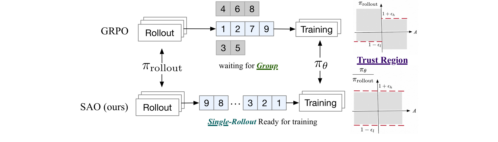
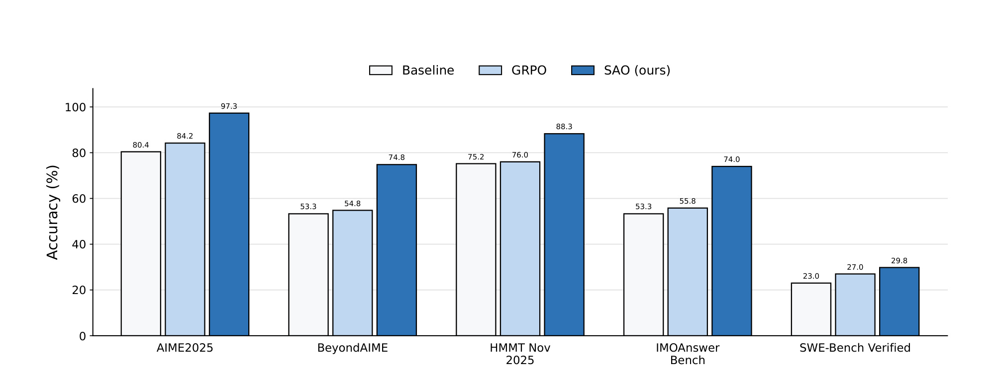
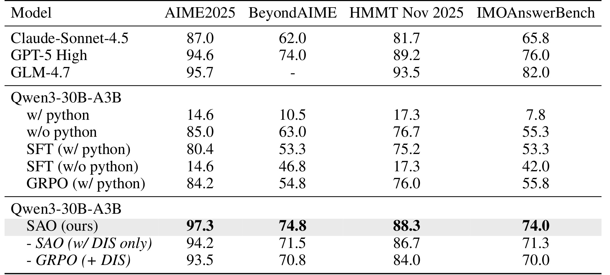
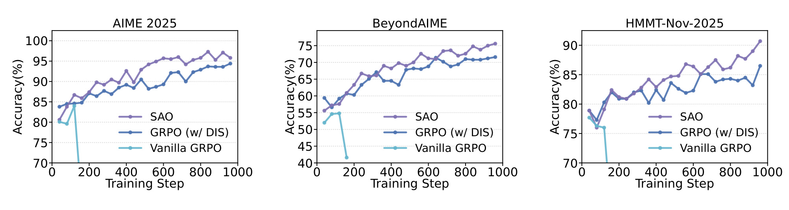
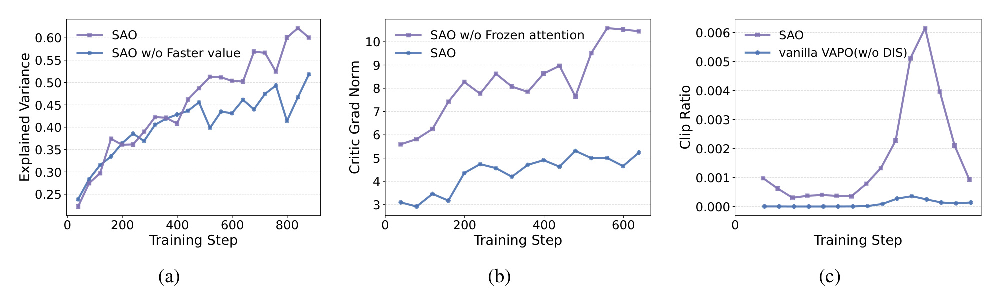
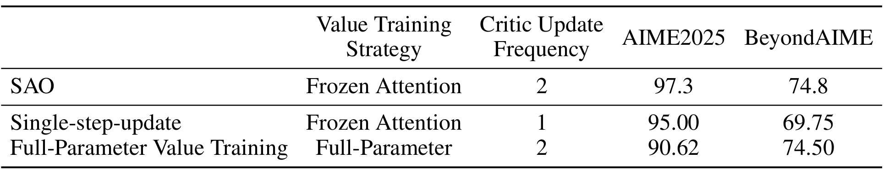
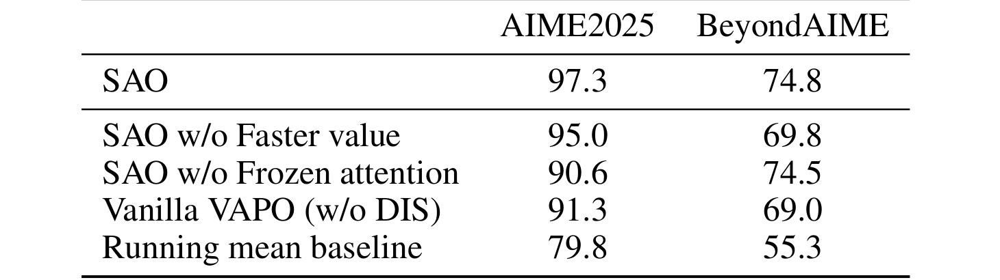
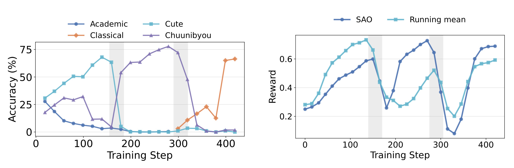
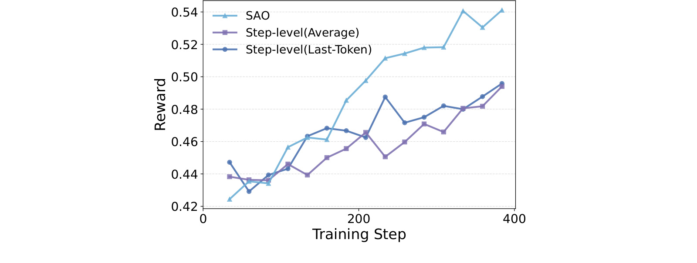

[toc]
这篇论文的英文题目是 Single-Rollout Asynchronous Optimization for Agentic Reinforcement Learning，中文可译作“面向 Agentic 强化学习的单轨迹异步优化”。论文作者为 Zhenyu Hou、Yujiang Li、Jie Tang、Yuxiao Dong，一作主机构是清华大学，论文首页脚注还说明前两位作者在 Z.AI 实习期间完成了相关工作。论文入口是 arXiv:2607.07508，公开日期为 2026-07-08。代码状态按事实包记录为：arXiv 摘要页和 PDF 首页未核验到独立公开代码链接。
这篇工作关注的是 LLM 后训练里越来越重要、但工程上很难稳定放大的 agentic RL。它不是单纯提出一个“更快的异步系统”，而是把异步 rollout、单条轨迹反馈、value model 训练、token 级 clipping 和 agent 多轮轨迹的 advantage 估计放在同一个优化问题里处理。读它时要把重点放在两个层面：第一，为什么 GRPO 这类组内相对优势方法在异步 agent 场景会形成结构性等待和 off-policy；第二，SAO 怎样用 value-based 单 rollout 把“在线环境一次只给一条反馈”的现实约束变成可训练的算法路径。
LLM 后训练正在转向长程 agentic RL，但同步批处理会被慢 rollout 拖住，异步 RL 又会引入 policy lag 和更严重的 off-policy；同时 GRPO 依赖同一 prompt 的组内相对优势，天然要求等待整组样本完成，难以适配真实在线或复杂 agent 环境里“一次 prompt 只得到一条轨迹反馈”的设定。
1. 背景和问题
LLM 的训练重心正在从单纯的监督预训练和 SFT，逐渐转到面向推理、工具调用、代码修复和多轮任务的强化学习后训练。论文开头把这个变化放在一个很现实的系统瓶颈下：大模型 agent 的 rollout 长度非常不均衡，短轨迹可能很快完成，长轨迹可能因为工具调用、代码执行、环境交互或长上下文推理拖很久。传统同步 RL 管线通常是“先用一个策略快照生成一整批轨迹，再等整批收齐后进入优化”。在普通短回答任务里，这种等待可能还能接受；但在 SWE-Bench、数学工具推理、GUI agent 或在线偏好适配里，慢轨迹会让大量 GPU 或 learner 等待，生成端和训练端无法连续流动。
异步 RL 的自然想法是让 rollout 一完成就进入训练，避免被同组中最慢样本拖住。可是异步并不自动等于稳定。论文强调的第一个矛盾是 policy lag：轨迹生成期间，训练端的策略可能已经更新了多次，同一条轨迹里甚至可能由多个 rollout model 版本共同产生 log probability。训练端如果继续把这些样本当成来自一个清晰的 old policy，就会低估 off-policy 的不确定性；如果为了精确追踪每个历史策略而保存大量 checkpoint，又会把系统复杂度和显存、存储、调度成本推高。也就是说，异步节省了等待时间，却把行为策略和当前策略之间的偏移放大了。
第二个矛盾来自 GRPO 这样的 group-wise 方法。GRPO 的优势估计依赖同一 prompt 下多个回答的相对奖励，组内均值或归一化奖励给出了一个低方差 baseline。这在同步训练里很有吸引力，因为不需要额外 value model；但它要求同一组样本全部生成完成后才能计算优势。对长程 agentic rollout 来说，这一要求直接制造同步屏障：同组里的慢样本决定整组什么时候能训练。更麻烦的是，真实在线系统通常不是“同一 prompt 先采 8 条回答再比较”，而是用户或环境给出一次任务、模型执行一条轨迹、系统得到一次反馈。论文因此认为 group-wise sampling 不只是效率低，而是和在线或复杂 agent 环境的反馈形态不匹配。
这篇论文的核心问题可以概括为：怎样保留异步 rollout 的吞吐和墙钟效率，同时不让 policy lag、单轨迹高方差和多轮 agent observation 噪声把训练搞崩？SAO 的答案不是继续给 GRPO 打补丁，而是把“单 prompt 单 rollout”作为第一性设定：每条完成的轨迹可以立即用于训练；优势估计不再靠组内样本比较，而靠训练得足够稳的 value model；off-policy 校正不再尝试还原复杂历史 old policy，而是直接利用 rollout 阶段保存的 token log probability，并用严格的双边 token 级 trust region 把漂移过大的 token 从梯度里排除。
这个问题对推荐系统和大模型应用都有迁移意义。推荐系统里的在线学习、bandit、用户反馈更新、长会话重排也常常面对单次交互反馈和非平稳偏好；大模型 agent 则面对更长的 action-observation 轨迹、更高的推理成本和更难复现的环境状态。SAO 论文并不解决推荐任务本身，但它给出了一条有参考价值的路径：当系统不能为每个样本构造稳定的组内比较时，可以重新引入 value model，并通过更严格的概率比控制、critic 训练节奏和轨迹结构处理，换取异步训练可用性。这也是它值得被放进每日 agentic RL 观察清单的原因。
2. 方法
2.1 从组采样到单 rollout 的异步训练
SAO 的整体结构首先改变了 rollout 和 training 的衔接方式。GRPO 的组采样会为同一个 prompt 生成多条 response，并等待这一组 response 全部完成后再计算 group-relative advantage；SAO 则把每个 prompt 的一条完成轨迹直接送入训练队列。这个差别看似是调度层面的，但论文把它视为算法设定的改变：一旦不再有组内样本，优势估计就不能依赖组均值，必须由 value model 给出 baseline；一旦轨迹完成即可训练，系统就不必为同组慢样本付出等待成本，但也必须承受更复杂的 policy lag。

Figure 2 把这个差别画得很直接。上半部分的 GRPO 中，同一 prompt 的多个 rollout 按不同生成顺序完成，但 training 端必须等待整组样本聚齐；这意味着早完成的轨迹在队列里等待时会变旧，策略已经变化却仍要被当作同一训练批的一部分。下半部分的 SAO 则把“完成顺序”变成“训练顺序”，第 9、8、3、2、1 等轨迹只要结束就可以进入 learner。图右侧的小 trust-region 示意说明，SAO 并不是放任任意旧样本训练，而是用 token 级概率比和区间约束限制更新范围。对长程 agent 任务来说，这张图的关键不是“队列更短”，而是训练样本的语义单位从 prompt group 变成 completed trajectory，后续所有 value model、clipping 和 GAE 设计都围绕这一单位展开。
这种设计的代价是单 rollout 天然更像 REINFORCE，梯度方差会比组内相对优势更高。如果没有一个可靠的 value baseline，单条轨迹的奖励很容易把 policy 往偶然成功或偶然失败的方向推。论文因此没有走 critic-free 路线，而是明确接受 value model 的额外成本：SAO 用更复杂的 critic 训练换取异步和在线反馈场景下的结构适配。这也是它区别于“给 GRPO 加异步系统”的地方。
2.2 直接双边 token 级重要性采样
异步 RL 中最难处理的是行为策略到底是谁。标准 PPO 或 decoupled PPO 通常会维护 current policy、old policy 和 rollout policy 的关系，用概率比做重要性采样和 clipping。可是 agent rollout 可能很长，异步系统可能在一条轨迹生成过程中更新多次模型；如果要精确记录每个 token 对应的 old policy checkpoint，工程上需要维护一串历史模型，这在大模型后训练里基本不可接受。SAO 的处理是更直接的：训练时把 rollout 阶段保存的 log probability 当成 behavior proxy，当前策略重新计算同一 token 的 log probability，然后构造 token 级概率比。
论文的基础 clipped surrogate 目标可以写成：
符号解释：这里的 (y) 是回答序列，(t) 是 token 位置，(r_t(\theta)) 表示当前策略和旧行为策略在该 token 上的概率比，(\hat{A}_t) 是优势估计，(\epsilon) 是 trust region 的裁剪宽度。这个式子说明 PPO/GRPO 风格方法本质上是在限制策略更新幅度，防止单步更新离采样策略太远。
SAO 对这个目标的核心改写是：
符号解释：(\pi_\theta(a_t\mid s_t)) 是当前策略在状态 (s_t) 下生成动作 token (a_t) 的概率；(\epsilon_l) 和 (\epsilon_h) 分别是概率比下界和上界的容忍宽度；函数 (f) 决定这个 token 是否进入有效梯度。与常规 clipping 相比，这里不是简单把概率比压到边界，而是把越界 token 的贡献置零。
概率比由 rollout log probability 直接给出：
符号解释：(\log\pi_{\mathrm{rollout}}) 是轨迹生成时保存的 token log probability，(\log\pi_\theta) 是训练时当前模型对同一 token 的 log probability。这样做避免了维护大量 historical old policy；代价是它承认 rollout policy 只是行为代理，并不完美等同于某个干净的旧策略快照。因此 SAO 必须让后面的校准函数更严格。
双边校准函数是：
符号解释：(x) 是某个 token 的当前概率比；当它落在 trust interval 内时，SAO 保留这个 token 的加权梯度；当它小于 (1-\epsilon_l) 或大于 (1+\epsilon_h) 时，该 token 被 mask。这个设计的重点是把异步系统里最可疑的 token 直接排除，而不是指望一个可能失真的 old-policy ratio 还能精确修正 off-policy。论文把这种方法称为 Direct Double-Sided Importance Sampling，简称 DIS。
2.3 让 value model 支撑单 rollout 的低方差优势估计
单 rollout 去掉组内比较后，value model 的质量就成为算法能否工作的中心。论文提出的第一个实用策略是让 critic 更新得比 actor 更快。具体做法是对每一次 policy update，value network 执行 (K) 次更新，实验中设 (K=2)。直觉是：异步单轨迹训练里 policy 分布变化快，如果 value model 还按同样频率慢慢跟，就会给出滞后的 baseline，使优势估计带着更大的噪声。更快的 critic 更新可以让 value estimate 先贴近当前策略分布，再被 actor 用来更新。
第二个策略是 frozen-attention value training。论文的 pilot 实验发现，value model 的梯度范数明显大于 policy model，进一步分解后不稳定主要来自 full attention 层，而 MoE 层相对稳定。于是 SAO 在 RL 阶段冻结 value model 的 attention 参数，只优化 MoE projection 等部分参数。这个选择有两个含义：一方面，预训练 attention 权重已经具备一定语义选择能力，不一定需要在 RL 阶段剧烈调整；另一方面，value model 的职责是提供可用 baseline，不是重新学习完整生成能力，过度更新 attention 可能放大数值不稳定。
第三个策略是扩大 value pretraining 数据，缓解 cold start。单 rollout 方法里，critic 一开始如果完全不懂回报结构，早期 advantage 会非常嘈杂；而异步训练又可能在早期就不断消费新轨迹，错误优势很快会反馈到 policy。因此 SAO 需要一个更稳的初始 value model。这里的工程启发是，critic-free 的简洁性在同步组采样里很诱人，但在异步单反馈场景下，稳定 critic 反而是系统能持续训练的基础设施。
2.4 跳过环境 observation 的 token 级 GAE
Agentic 任务的轨迹不是普通文本序列，而是 action 和 observation 交替出现，例如 (T=[a_0,o_0,a_1,o_1,\ldots])。其中 (a_i) 是模型生成的动作或回复片段，(o_i) 是环境、工具、代码执行器或外部系统返回的 observation。标准 token 级 GAE 会在相邻 token 之间传播 TD error；但从模型视角看，action 末尾到 observation 开头不是模型自己生成的连续文本。如果把 observation token 也纳入同样的 value transition，value model 会被迫预测外部环境状态，噪声会回灌到 action 的优势估计里。
SAO 的 skip-observation GAE 把当前 action 的末尾 token 直接连接到下一次 model action 的首 token。论文写作中给出的形式是：
符号解释：(a_{i,N}) 是第 (i) 个模型 action 的最后一个 token，(a_{i+1,0}) 是下一个模型 action 的第一个 token，(\gamma) 是折扣因子，(\lambda) 是 GAE 的衰减参数，(\hat{A}) 是优势估计。这个式子不让优势沿着 observation token 链条传播，而是把模型可控的 action 边界连接起来。
对应的 TD residual 是：
符号解释：(r_t) 是当前位置的奖励信号，(V(a_{i,N})) 是当前 action 末尾的 value，(V(a_{i+1,0})) 是下一次模型 action 开始处的 value。这个设计把环境反馈视为被跳过的外部段落，而不是模型应当生成和建模的 token。对工具调用 agent 来说，这一点很关键：模型应该为自己选择的 action 负责，但不应把环境返回文本本身当成需要优化生成概率的动作。
论文还在在线学习模拟里定义了一个二元风格奖励：
符号解释：(r_{\mathrm{quality}}) 衡量回答质量是否合格，(r_{\mathrm{style}}) 衡量是否符合当前目标风格，二者相乘意味着质量或风格任一失败都会使最终奖励为 0。这个奖励设计服务于非平稳偏好实验：系统依次偏好 cute、chuunibyou、classical 等风格，检验 SAO 是否能从单条在线反馈中快速适配环境变化。
3. 实验结果
3.1 主结果总览
实验部分围绕两个主任务展开：一类是数学工具推理，另一类是代码修复 agent。数学推理使用 Qwen3-30B-A3B-Thinking-2507 相关模型，先在 GPT-OSS-120B 产生的 Tool-Integrated Reasoning 数据上微调，再进行 RL；评测包括 AIME2025、BeyondAIME、HMMT Nov 2025 和 IMOAnswerBench，报告 Pass@1 accuracy。代码任务使用 SWE-Bench Verified，并以 OpenHands 作为 scaffold，最大交互轮数为 300，最大上下文为 128k tokens。训练里 SAO 的 group size 为 1，batch size 为 128，价值模型学习率高于策略学习率，并采用前文的 DIS、faster value update 和 frozen-attention value training。

Figure 1 是论文首页给出的总览图，展示 SAO 相对 baseline 和 GRPO 在五个任务上的提升。它的读法要注意两点。第一，四个数学任务和 SWE-Bench Verified 的难度、评测协议不同，不能把所有柱子的绝对数值简单混在一起比较；更重要的是同一任务内的相对变化。第二，SAO 的优势不是只在单个 benchmark 上出现：AIME2025、BeyondAIME、HMMT Nov 2025、IMOAnswerBench 和 SWE-Bench Verified 都显示 SAO 高于对应 GRPO 或 baseline。这个图给出的是横向信号，说明作者后续声称“稳定训练和任务有效性同时改善”不是只靠一张消融表支撑，也不是只在数学或只在代码上挑选了一个有利例子。

Table 1 给出数学推理的具体数字。对于 Qwen3-30B-A3B，SAO 在 AIME2025 上达到 97.3，BeyondAIME 为 74.8，HMMT Nov 2025 为 88.3，IMOAnswerBench 为 74.0；同表中的 GRPO with python 是 84.2、54.8、76.0、55.8，GRPO(+DIS) 是 93.5、70.8、84.0、70.0。这里最有信息量的不是 SAO 高于原始 SFT，而是 SAO 高于已经加入 DIS 的 GRPO 变体。DIS 本身已经能修正一部分异步 off-policy，SAO 继续提升，说明 single-rollout/value-based 路线不只是把 GRPO 的裁剪策略搬过来，而是通过去掉组等待和改进 critic 带来额外收益。表中也列了 Claude-Sonnet-4.5、GPT-5 High、GLM-4.7 等外部系统作为参照，但这些模型规模、训练数据和评测细节不可直接等同，笔记里只把它们作为难度标尺，不当作公平 baseline。
Table 2 关注代码修复任务。Qwen3-30B-A3B baseline 是 23.0，GRPO with DIS 是 27.0，SAO 是 29.8。这个表很小，但对论文论证很重要，因为 SWE-Bench Verified 代表的不是短数学答案，而是需要 scaffold、多轮交互和长上下文的 coding agent 评测。SAO 的增益幅度没有数学任务那么夸张，但它说明单 rollout 异步优化并不只适用于可程序校验的数学题，也可以迁移到更复杂的代码环境。需要保守看的是，论文没有给出线上真实代码助手的 A/B 或部署成本数据，所以这里能支持的是“benchmark 上有效”，不能外推为真实 IDE agent 一定能同等提升；它更像是证明算法路径可行的窄证据。
3.2 训练稳定性和长程曲线
主结果表容易让人误以为 SAO 的价值只是最终分数更高；Figure 3 说明更关键的是训练曲线。论文写到 vanilla GRPO 在大约 160 step 附近发生 collapse，最终报告的是 collapse 前有效 performance；GRPO with DIS 可以稳定训练，说明直接 token-level ratio 和 clipping 对异步 setting 有帮助；但 SAO 和 GRPO with DIS 在早期接近，约 400 step 之后逐渐拉开差距，说明单 rollout 和 value model 设计的优势需要更长训练才显现。

Figure 3 三个面板分别是 AIME2025、BeyondAIME 和 HMMT-Nov-2025。可以看到 SAO 曲线整体更平滑地向上，GRPO with DIS 虽然避免了 vanilla GRPO 的早期崩溃，但后期上升斜率和最终水平更弱。这个图对理解论文贡献很关键：如果只看 DIS，结论可能是“异步 RL 只要更好 clipping 就够了”；但曲线显示 clipping 解决的是极端 off-policy token 的稳定性，不能替代单 rollout 与 critic baseline 在长期训练中的泛化效果。对工程复现而言，Figure 3 也提示需要观察完整训练过程，而不是只在几个 early checkpoint 上比较；否则可能低估 SAO 这种后期才拉开的设计。
3.3 消融和训练动态
论文的消融围绕三个稳定性来源展开：critic 更新频率、frozen-attention value training 和 DIS。Figure 4 先给过程指标，Table 3 和 Table 4 再给分数。这个组合比单独报 ablation 更有说服力，因为它把“为什么有效”拆成可观测训练信号：value model 的 explained variance 是否提高、critic gradient norm 是否变稳、token clip ratio 是否真正排除了越界更新。

Figure 4(a) 比较 explained variance。SAO 在约 400 step 后明显高于没有 faster value update 的基线，说明 value model 更能贴合真实 return。Figure 4(b) 比较 critic gradient norm，full-parameter value training 的梯度范数更高且不稳定，frozen attention 后梯度更低、更平滑，这对应了论文对 attention 层不稳定来源的观察。Figure 4(c) 比较 clip ratio，VAPO without DIS 的 clip ratio 接近 0，看似“很少裁剪”，但论文认为这恰恰说明它没有有效 gate 掉异步带来的偏移 token，最终会在约 90 step 崩溃。三张小图合起来说明，SAO 的稳定不是单点技巧，而是通过 critic 对齐、参数冻结和严格 token mask 共同形成。

Table 3 把 value training strategy 和 critic update frequency 分开看。SAO 使用 frozen attention 且 critic update frequency 为 2，在 AIME2025 和 BeyondAIME 上分别是 97.3 和 74.8；single-step-update 仍冻结 attention 但 critic 只更新 1 次，分数降到 95.00 和 69.75；full-parameter value training 保持 critic 更新 2 次，但分数是 90.62 和 74.50。这个表支持两个判断：第一，critic 追不上 policy 时，BeyondAIME 这种更难或分布更复杂的评测下降明显；第二，全参数更新 value model 未必更强，反而可能把本来可用的语义 attention 搅乱，使 critic 训练不稳定。对复现者来说，这意味着不能只复现“group size=1”，还要复现 critic 训练节奏和冻结策略。

Table 4 更像最终消融摘要。SAO 是 97.3/74.8；去掉 faster value 后是 95.0/69.8；去掉 frozen attention 后是 90.6/74.5；Vanilla VAPO without DIS 是 91.3/69.0；running mean baseline 是 79.8/55.3。这里可以看出 running mean 虽然提供了一个无需 parametric value model 的单 rollout baseline，但效果明显落后；VAPO without DIS 在数字上也不够，且论文正文指出其训练会快速 collapse。这个结果强化了一个结论：SAO 不是简单“单条样本也能做 RL”，而是要求 value baseline、异步 off-policy gate 和价值模型训练策略同时到位。
3.4 在线学习模拟
为了证明单 rollout 的结构优势，论文设计了一个非平稳在线写作风格任务。系统 prompt 要求模型从候选风格中选择一种输出；奖励由 GLM-4.7 作为 judge，分别判断 response quality 和 stylistic adherence，最终二元奖励是二者乘积。训练过程中，偏好依次切换到 cute、chuunibyou、classical 等风格。这个设定虽然是模拟环境，不等于真实线上用户反馈，但它构造了一个 GRPO 不太自然的场景：每次 prompt 只返回一条轨迹和一次反馈，无法依赖同 prompt 多样本组内比较。

Figure 5 左图展示不同风格准确率随训练 step 变化，阴影区域代表偏好切换；右图比较 SAO 和 running mean baseline 的 reward。左图能看到，当目标风格变化时，SAO 会压低旧主导风格并把策略转向新目标。右图显示两种方法最终都能一定程度恢复，但 running mean 因为维护历史窗口，会被上一阶段奖励分布拖住，出现更明显的适配滞后和更低稳定水平。这个实验的价值在于把“单 rollout 适合在线学习”的说法具体化：当环境反馈本身在变，组内相对奖励不易构造，state-dependent value critic 比滑动平均 baseline 更能跟踪当前状态和偏好。不过它仍是受控模拟，真实用户偏好的切换会更稀疏、更含噪，也更需要安全约束。
3.5 附录中的动作粒度证据
附录 A.1 检查另一个重要选择：为什么 SAO 坚持 token-level value 和 policy action，而不是把一个 agent step 当作 action。论文实现了 step-wise GAE，把一次对话 turn 看作一个 step，并尝试两种 step value：一种是 step 内 token value 平均，另一种只取 step 最后一个 token。这样做看起来可以降低 token 级噪声，但会把复杂推理轨迹里的细粒度逻辑转移压平。

Figure 6 显示 token-level SAO 的训练 reward 高于 step-level average 和 step-level last-token 两种变体。这个图的启发是，agent step 作为语义单位太粗：一个 step 里可能包含多个推理子步骤、工具调用前后的关键信号、错误修正和最终动作，而这些 token 对回报的贡献并不相同。step-level advantage 统一分配给整段 token，确实可能降低局部噪声，但也会削弱 critic 对关键 token 边界的分辨能力。对代码修复和数学工具推理来说，这种细粒度监督很可能正是区分正确思路和错误岔路的来源。也因此，SAO 的 token-level 设计不是为了形式上贴近语言模型，而是为了保留复杂轨迹内部的信用分配分辨率。
Table 5 给出相同 400 training steps 下的数字：step-level average 在 AIME2025/BeyondAIME 上是 85.8/60.5，step-level last-token 是 87.3/62.8，token-level 是 89.8/66.8。这个表和 Figure 6 一起说明，token-level 不只是 reward 曲线上好看，也在评测分数上更高。需要注意的是，这个附录实验的 token-level 数字低于主实验中的 SAO 终局分数，因为它使用相同 400 steps 的对照口径；因此它的作用不是替代主结果，而是证明动作粒度选择对训练早中期效果有影响。
整体看，实验链条比较完整：Table 1/2 证明主任务有效，Figure 3 证明长训练稳定，Figure 4 和 Tables 3/4 拆解稳定性来源，Figure 5 证明在线单反馈场景的适配价值，Figure 6/Table 5 则支撑 token-level action granularity。仍需保守的地方也很明确：论文基于 Qwen3-30B-A3B 和特定 agent/coding/math 设置，尚未证明小模型、短回答 RLHF、dense reward 环境或真实用户在线学习同样成立；同时，SAO 依赖 token-level rollout log probability 和 value model 基础设施，部署成本比 critic-free GRPO 更高。
4. 总结
4.1 我的判断
SAO 的贡献不在于提出一个复杂的新 RL 目标，而在于把异步 agentic RL 里几个长期分散的问题合在一起：组采样等待、policy lag、单轨迹高方差、value model 不稳定、环境 observation 噪声。它的核心判断是，长程 agent 和在线反馈场景不应强行套用 GRPO 的 group-wise 优势估计；更现实的训练单位是一条完成轨迹。为了让这条路可行，论文用 DIS 控制 token 级 off-policy，用更快 critic 更新和 frozen attention 稳住 value model，用 skip-observation GAE 避免外部环境文本污染 advantage。
我认为最值得跟进的是它对 value model 的重新定位。近两年很多 LLM RL 工作倾向于 critic-free，因为 value model 显存大、训练不稳、工程复杂；SAO 则说明在异步单反馈场景里，critic 的复杂性可能是必要成本。它不要求 critic 变成一个全能力模型，而是通过冻结 attention、加快 critic 更新和扩大预训练数据，让 critic 成为一个服务于优势估计的稳定模块。这对推荐系统里的在线 bandit、会话级长期价值估计和个性化反馈更新也有借鉴意义。
4.2 工程启发与复现风险
工程上，复现 SAO 需要优先检查四件事。第一，rollout engine 是否能可靠保存 token-level log probability，否则 Equation 2 的行为代理就无法建立。第二，learner 是否能处理异步队列中不同 staleness 的轨迹，并对越界 token 做 mask，而不是只做 batch-level 过滤。第三，value model 是否有足够预训练和稳定更新策略；如果只把 actor 复制一份当 critic，却没有 frozen attention 或更快 critic update，很可能复现不到论文曲线。第四，agent 环境里的 action 和 observation 边界必须清晰标注，否则 skip-observation GAE 无法知道哪些 token 是模型生成、哪些 token 是外部返回。
论文的局限也应当明确。其一，实验集中在 Qwen3-30B-A3B 级别和 agentic reasoning/coding 任务，小模型或普通 RLHF 是否同样需要 SAO 不确定。其二，在线学习实验是写作风格模拟，由 LLM judge 给二元奖励，距离真实用户行为、隐私约束和业务指标仍有距离。其三，SAO 依赖更强的 value model 和 rollout logprob 记录，对工程系统的可观测性要求更高。其四，双边 token mask 会丢弃越界 token 的梯度，稳定性提升的同时也可能牺牲一部分高价值但分布偏移较大的探索样本。其五，论文没有公开独立代码链接，短期内复现实验细节需要等待作者后续释放或从 PDF 细节重建。
4.3 后续跟进
后续我会优先关注三条线索。第一，是否有开源实现或 GLM-5.2 agentic RL 管线细节发布，尤其是 rollout logprob、critic update schedule 和 frozen-attention 的具体参数。第二，其他异步 RL 系统如 AReaL、ROLL Flash 与 SAO 的结合方式：系统吞吐优化和算法稳定性是否可以叠加，还是会在 staleness 控制上互相约束。第三，把 SAO 思路迁移到推荐/广告/搜索在线学习时，value model 对应的状态、reward 和 observation 边界如何定义；推荐系统里很多反馈不是 token 级，而是曝光、点击、停留、转化等事件级，是否需要类似 skip-observation 的跨事件 advantage 设计。总体来说，SAO 是一篇值得精读的 agentic RL 论文，因为它把“异步更快”推进到“异步如何真正稳定有效”这一层。